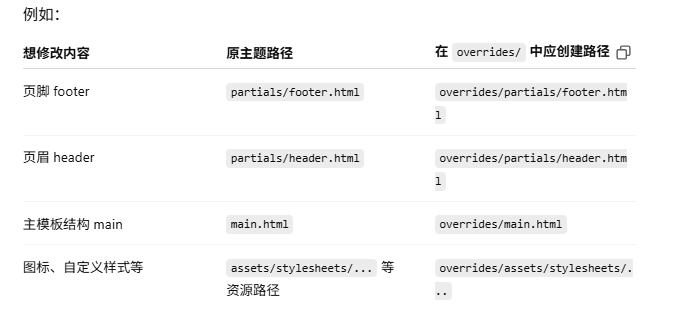

自定义你的主题¶
每个项目的文档风格都不同，Material for MkDocs 虽然默认美观，但你可能会希望进行一些细节调整，使其更符合你的品牌或使用习惯。本节介绍如何在不修改源码的前提下，灵活定制主题外观与行为。
1. 添加自定义资源（CSS/JS）¶
添加自定义 CSS¶
用于调整颜色、边距、字体等视觉样式。操作步骤：
1. 在 docs/ 下新建样式文件：:
- 在
mkdocs.yml中引用它：
添加自定义 JavaScript¶
用于增加功能，例如表单校验、滚动动画，或引入第三方库。操作步骤：
1. 在 docs/ 下新建 JS 文件：
- 在
mkdocs.yml中引用它：
2. 扩展模板（HTML结构）¶
如需对页面结构做更深层定制（如修改页眉、导航结构），可使用 MkDocs 提供的 theme extension 机制，无需 Fork 原始主题。
启用扩展机制¶
- 创建
overrides/目录: - 修改
mkdocs.yml：
custom_dir 时，overrides/ 目录下的结构必须严格模拟官方主题的文件结构。也就是说：如果你希望修改主题的某个文件，就需要在 overrides/ 中使用相同路径和文件名创建一个副本，系统会自动使用该副本替换原文件。例如：

此外你还可以在 overrides 目录下加入：
- .icons/：自定义图标集
- assets/：静态资源（如图片、脚本、CSS）
- partials/：模板片段，影响页面组成部分
- *.html：整体页面（如主页、404 页、博客主页等）
这些资源会被 MkDocs 渲染引擎优先加载，覆盖默认主题中的内容。
覆盖部分模板片段（partials）¶
你可以选择性地重写模板的某个片段，例如页脚、页眉、导航栏等。你放在 overrides/ 中的文件将替代官方主题中同路径同名的文件。文件组织应与原始主题目录结构一致，例如： - 修改页脚：覆盖 partials/footer.html
- 替换网站主模板：覆盖 main.html - 添加自定义图标、图片或脚本：放在 assets/ 目录下 可定制的模板片段（partials）包括页眉页脚、导航菜单、搜索框、评论区、语言切换、版权信息等。覆盖模板块（Blocks）推荐方式¶
更推荐的方式是使用 Jinja2 模板继承机制，通过 block 标签只修改部分内容，保留原有结构。 示例：修改页面 标题
放入文件：overrides/main.html 此操作只会替换 head 中 title 的内容，其它页面结构不受影响。
示例：在页面中添加第三方脚本 你可以通过 scripts 区块在文档页面底部插入额外脚本：
{% extends "base.html" %}
{% block scripts %}
<!-- 插入脚本前的内容 -->
{{ super() }}
<script src="https://example.com/myscript.js"></script>
{% endblock %}
支持的模板区块（Blocks）列表
以下是 Material for MkDocs 支持的 block 名称及其作用：
| Block 名称 | 用途说明 |
| :---------------- | :---------------------------------------------- |
| analytics | 包裹 Google Analytics 代码 |
| announce | 公告栏 |
| config | 页面 JavaScript 配置 |
| container | 主体内容容器 |
| content | 页面主要内容 |
| extrahead | 自定义 meta 标签 |
| fonts | 字体加载 |
| footer | 页脚 |
| header | 固定顶部栏 |
| hero | 首页宣传横幅 |
| htmltitle | 网页标题 title 标签 |
| libs | JS 库加载（头部） |
| outdated | 版本警告 |
| scripts | JS 文件加载（底部） |
| site_meta |
site_nav | 页面导航和目录 |
| styles | 样式表（含额外样式） |
| tabs | 标签页导航（若使用） |
你可以根据自己的修改需求选择合适的 block 来扩展或替换。
3. 开发自定义主题（源码级修改）¶
虽然通过 custom_dir 和模板覆盖已经可以满足大部分定制需求，但有时你可能希望更改主题的底层行为，例如组件结构、功能逻辑等。这就需要直接修改**主题源码并重新构建**。
Material for MkDocs 使用以下技术构建：
- TypeScript：强类型的 JavaScript 超集，用于编写 JS 应用逻辑。
- RxJS：响应式数据流库，用于实现事件监听等功能。
- SASS (SCSS)：样式预处理器，支持变量、嵌套、模块化。
开发环境配置¶
- 克隆项目源码
-
开源版本（免费）
-
Insiders（付费版）
或使用 SSH：``` git clone git@github.com:squidfunk/mkdocs-material-insiders.git ```- 创建 Python 虚拟环境
-
Insiders 版：
如果你使用了图像优化插件，还需在系统中安装： 4. 安装 Node.js 依赖 Material 项目使用 Node 工具链管理前端构建，因此需要在虚拟环境中安装 Node.js：
开发模式启动¶
- 启动前端监听器，自动编译样式与 JS 文件：
- 新开一个终端，启动 MkDocs 本地预览：
⚠️ 不要直接修改 material/ 目录，它是由源码目录 src/ 编译生成的，构建时会被覆盖。
主题构建（打包）¶
开发完成后，使用以下命令构建最终主题文件：
如需构建包含所有覆盖配置（如图标索引、schema 等），使用：```
npm run build:all
```
构建完成后，生成的压缩样式和脚本位于 material/ 目录，可供 MkDocs 使用或发布。